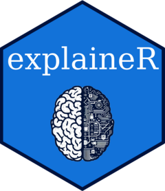
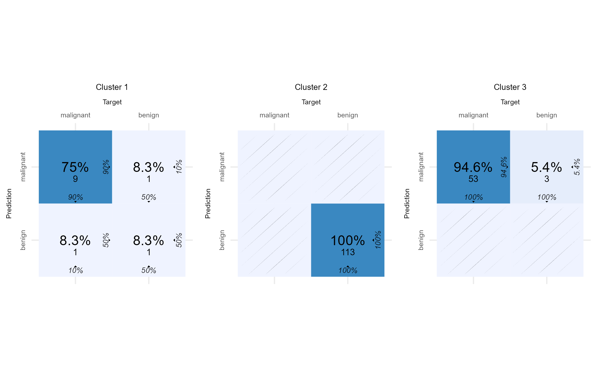

Explore feature contributions
Use Shapley analysis and visualisations to understand model predictions.

Machine Learning Model Explainer
Interpret and evaluate models in R
ExplaineR is an R package for interpreting classification and regression models through Shapley analysis, exploring subgroups, and evaluating model performance, fairness, and decision curves.
install.packages("explainer")
library(explainer)Follow the tutorials for binary classification, multiclass classification, and regression.
Use Shapley analysis and visualisations to understand model predictions.
Explore groups of individuals through their feature contributions and model behaviour.
Use multiple evaluation measures, fairness analysis, and decision curves.
